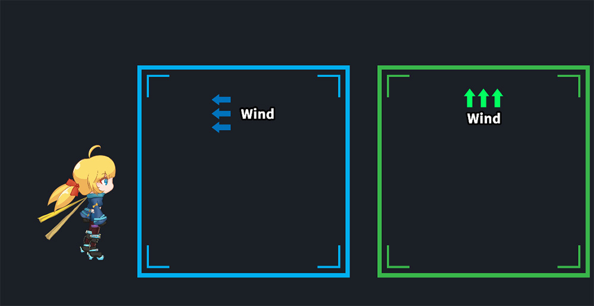
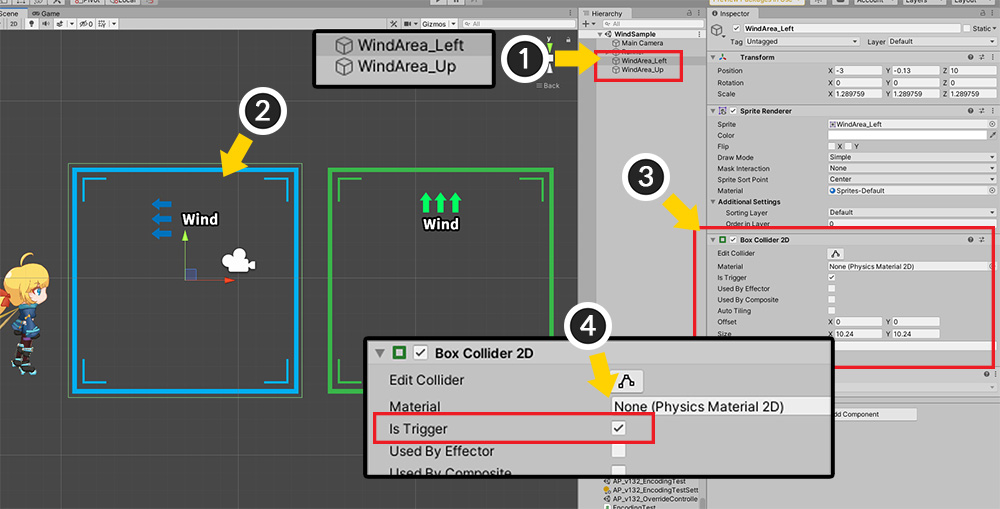
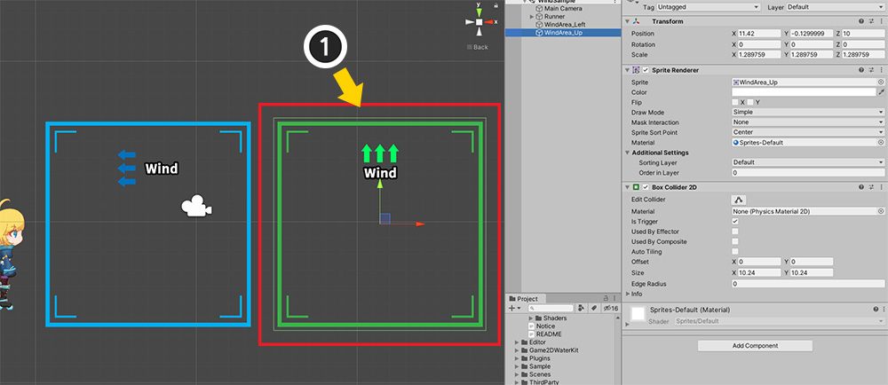
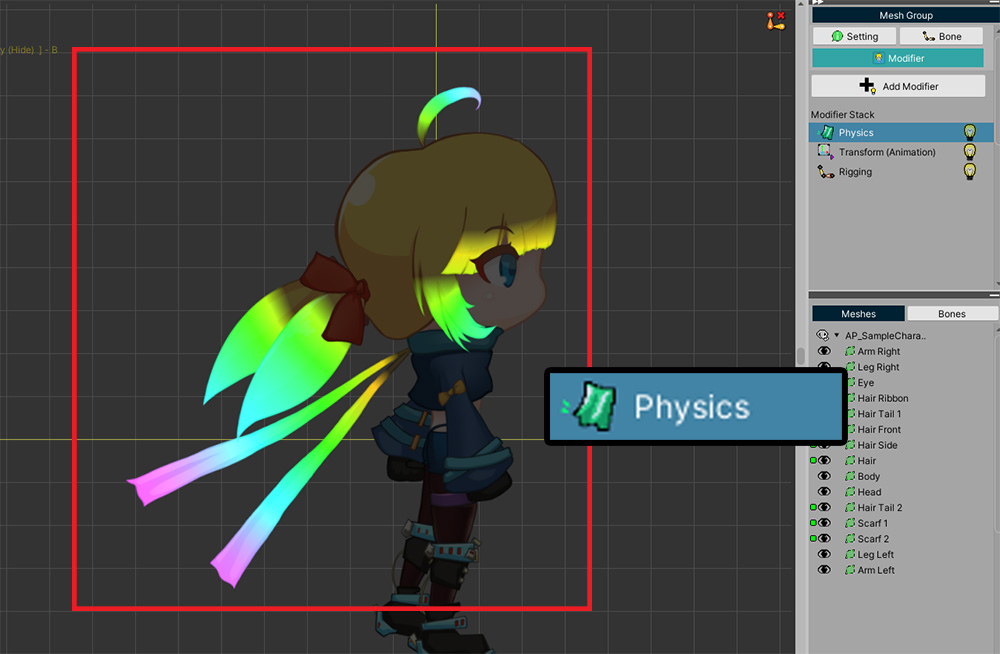
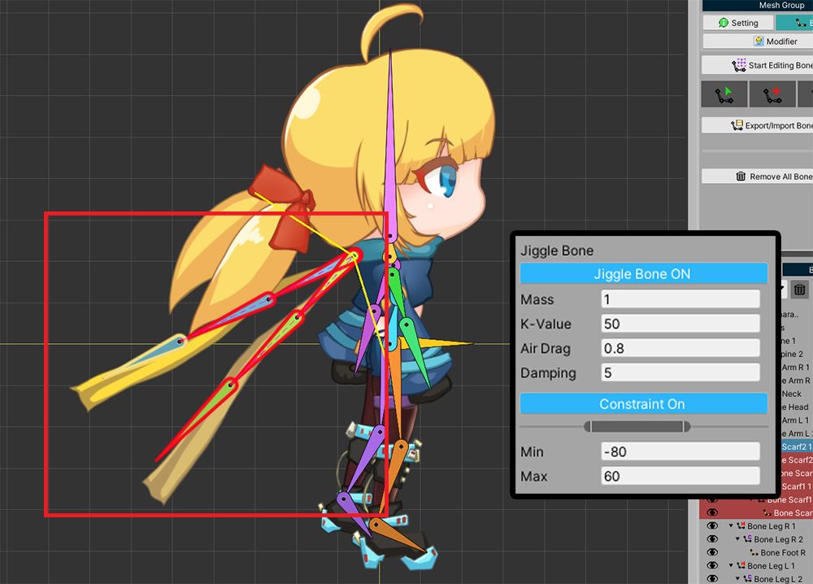
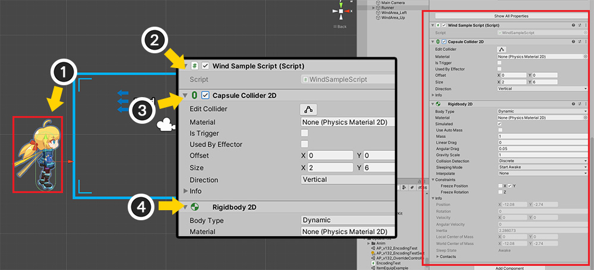
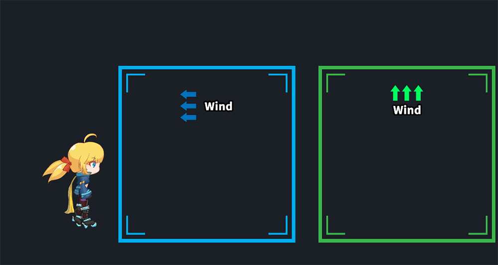
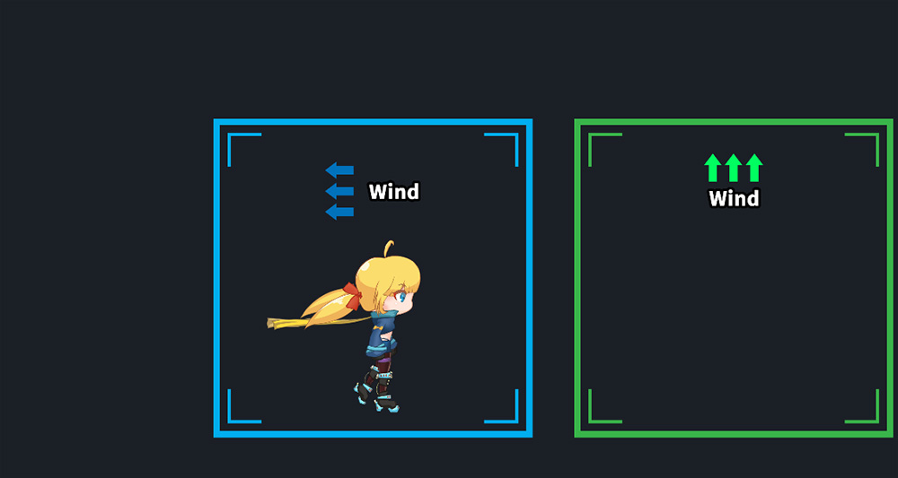
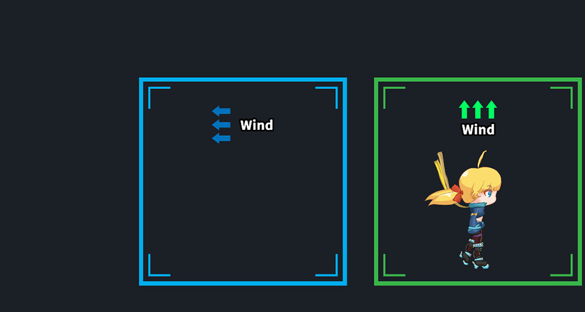

AnyPortrait > 메뉴얼 > 바람 효과 구현하기
바람 효과 구현하기
1.3.2

간단한 스크립트로 물리 모디파이어나 지글 본이 적용된 캐릭터에 물리 효과를 가할 수 있습니다.
이 페이지에서는 캐릭터가 특정 영역에 들어가면 바람이 부는 효과를 구현하는 방법을 설명합니다.
간단한 스크립트 사용법을 활용하여 여러분들의 프로젝트에서는 더 다양한 방법으로 물리 효과를 만들어 보세요!
아래의 페이지들을 같이 참고하시면 도움이 됩니다.
- 물리 효과 스크립트
- Getting Started 1.9 : 물리 효과 추가하기
- 물리 모디파이어의 상세 설정
- 지글 본

만들고자 하는 씬을 구성합니다.
캐릭터와 두개의 영역으로 구성되어 있습니다.
(1) 두개의 영역의 이름은 "WindArea_Left"와 "WindArea_Up"입니다.
캐릭터가 이 영역들에 들어가면 각각 왼쪽과 위쪽으로 바람이 불 것입니다.
(2) 영역 중 하나를 선택합니다.
(3) Box Collider 2D 컴포넌트를 추가합니다.
(4) Is Trigger 속성을 활성화합니다.

다른 영역도 동일하게 컴포넌트를 추가하고 설정합니다.

물리 효과는 물리 모디파이어나 지글 본에 적용됩니다.
물리(Physics) 모디파이어를 추가하고 물리 재질과 가중치를 메시에 적용합니다.

지글 본을 이용하여 물리 효과를 가지도록 만들 수도 있습니다.
이제 아래의 스크립트를 작성해서 캐릭터가 Trigger 안에 들어가면 바람이 적용되도록 만듭니다.
using UnityEngine;
using AnyPortrait;
public class WindSampleScript : MonoBehaviour
{
private apPortrait portrait;
private apForceUnit forceLeft = null;
private apForceUnit forceUp = null;
void Start()
{
portrait = GetComponent
}
private void OnTriggerEnter2D(Collider2D collision)
{
//"Left"란 글자가 이름에 포함된 영역에 들어간 경우
if(collision.gameObject.name.Contains("Left"))
{
//이미 힘이 생성되어 있다면 제거합니다.
if (forceLeft != null)
{
portrait.RemoveForce(forceLeft);
}
//왼쪽 (-1, 0) 방향으로 계속해서(Loop) 힘이 가해집니다.
forceLeft = portrait.AddForce_Direction(new Vector2(-1, 0)).SetPower(5000.0f);
forceLeft.EmitLoop();
}
//"Up"이란 글자가 이름에 포함된 영역에 들어간 경우
if(collision.gameObject.name.Contains("Up"))
{
//이미 힘이 생성되어 있다면 제거합니다.
if(forceUp != null)
{
portrait.RemoveForce(forceUp);
}
//위쪽 (0, 1) 방향으로 계속해서(Loop) 힘이 가해집니다.
forceUp = portrait.AddForce_Direction(new Vector2(0, 1)).SetPower(5000.0f);
forceUp.EmitLoop();
}
}
private void OnTriggerExit2D(Collider2D collision)
{
if (collision.gameObject.name.Contains("Left"))
{
if (forceLeft != null)
{
portrait.RemoveForce(forceLeft);
forceLeft = null;
}
}
if (collision.gameObject.name.Contains("Up"))
{
if (forceUp != null)
{
portrait.RemoveForce(forceUp);
forceUp = null;
}
}
}
}
- OnTriggerEnter2D, OnTriggerExit2D 이벤트는 "Is Trigger"가 설정된 Collider에 캐릭터가 들어가거나 나올때 호출됩니다. 이때 Collider의 이름을 이용하여 Left 영역인지 Up 영역인지 구분했습니다.
- AddForce_Direction 함수는 직선 방향의 힘을 가하는 함수입니다. 이 함수는 SetPower와 EmitLoop 또는 EmitOnce 함수와 함께 호출되어야 동작합니다.
- AddForce_Direction에서 생성하는 apForceUnit을 이용하여 왼쪽 바람과 위쪽 바람을 구분하고, RemoveForce 함수 호출 시 이용했습니다.

(1) 캐릭터를 선택합니다.
(2) 캐릭터에 위에서 작성한 스크립트를 추가합니다.
캐릭터가 Box Collider 2D 안에 들어가는 것을 인식하려면 Collider와 Rigidbody 2D 컴포넌트가 필요합니다.
(3) 여기서는 캐릭터 형태에 맞게 Capsule Collider 2D를 추가하고, 크기와 위치를 설정합니다.
(4) Rigidbody 2D를 추가합니다.
이 상태에서는 물리 엔진에 의해 캐릭터가 아래로 떨어질 것입니다.
Rigidbody 2D의 속성 중, Constraint > Freeze Position > Y를 체크하여 떨어지는 것을 막을 수 있습니다.

이제 게임을 실행해봅시다.
영역 밖에 있는 경우 캐릭터에 바람이 불지 않습니다.

캐릭터가 첫번째 영역에 들어가면 바람이 왼쪽으로 부는 것을 볼 수 있습니다.
OnTriggerEnter2D 이벤트가 발생하고 AddForce_Direction 함수가 호출되었기 때문입니다.

캐릭터가 두번째 영역에 들어가면 바람이 위쪽으로 부는 것을 볼 수 있습니다.

다시 캐릭터가 영역 밖으로 나오면 모든 힘이 사라집니다.
OnTriggerExit2D 이벤트가 발생하고 RemoveForce 함수가 호출되었기 때문입니다.